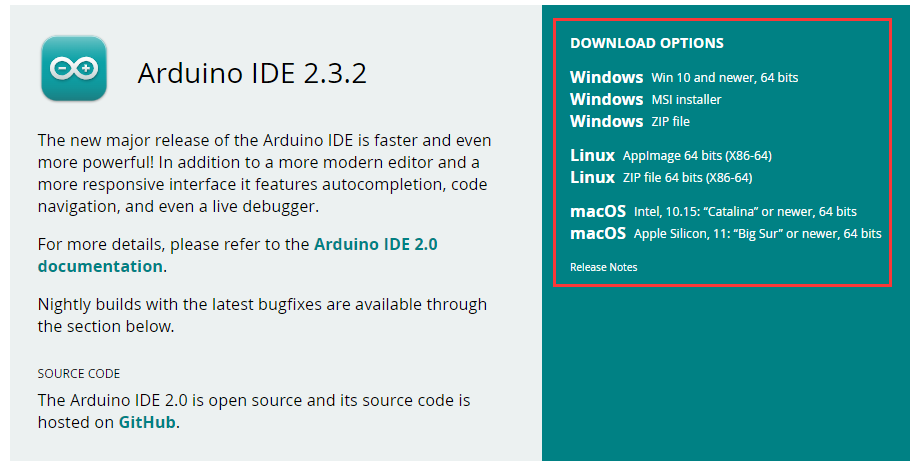
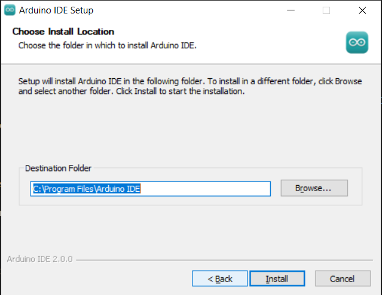
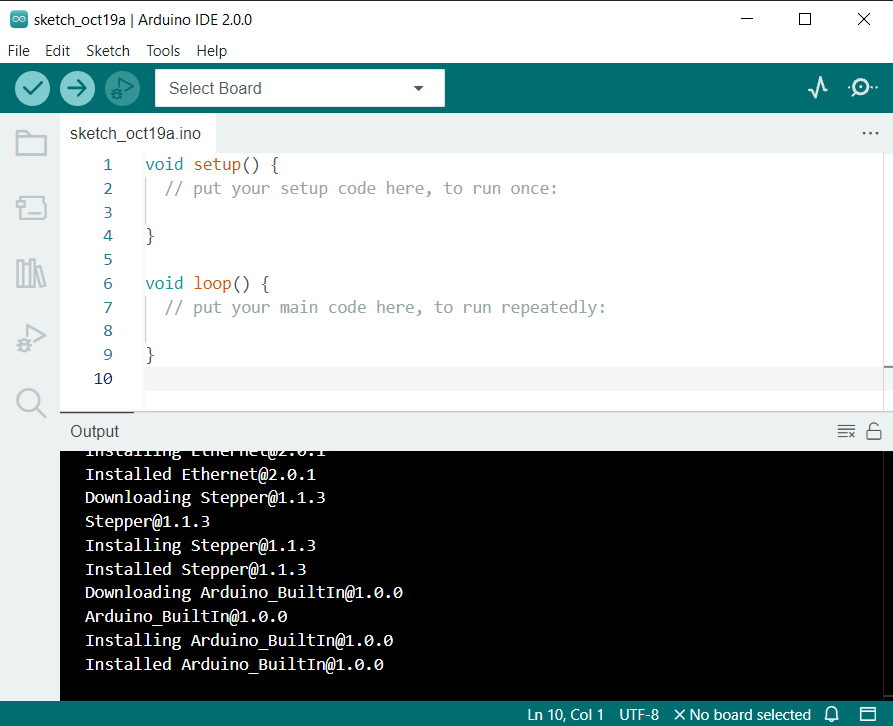
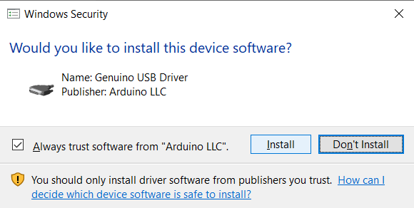

Install Arduino IDE
Download the Arduino IDE 2.x.x
Visit Download Arduino IDE page.
Download the IDE for your OS version.

Note
Uploading code to the Arduino UNO R4 requires Arduino IDE version 2.2 or higher. If your version is older, please upgrade to the latest version.
Installation
Windows
Double click the
arduino-ide_xxxx.exefile to run the downloaded file.Read the License Agreement and agree it.

Choose installation options.

Choose install location. It is recommended that the software be installed on a drive other than the system drive.

Then Finish.

MacOS
Double click on the downloaded arduino_ide_xxxx.dmg file and follow the
instructions to copy the Arduino IDE.app to the Applications folder, you will see the Arduino IDE installed successfully after a few seconds.

Linux
For the tutorial on installing the Arduino IDE 2.0 on a Linux system, please refer Linux-Install Arduino IDE
Open the IDE
When you first open Arduino IDE 2.0, it automatically installs the Arduino AVR Boards, built-in libraries, and other required files.

In addition, your firewall or security center may pop up a few times asking you if you want to install some device driver. Please install all of them.

Now your Arduino IDE is ready!
Note
In the event that some installations didn’t work due to network issues or other reasons, you can reopen the Arduino IDE and it will finish the rest of the installation. The Output window will not automatically open after all installations are complete unless you click Verify or Upload.